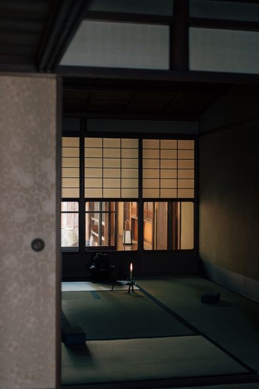

Long before I ever sat a full silent retreat, I tried something much smaller. One day, on a whim, I decided to stay quiet from the morning until well into the afternoon and see what actually happened.
Anyone who has spent real time with me will tell you I love talking. I have a hard time not talking. So going quiet for a stretch of hours felt less like a spiritual exercise and more like a dare I was making to myself.
I did not plan it carefully. I just decided that for one long stretch of the day, with a single short exception when I had to speak, I would not use my voice at all. Everything else had to happen through expression, gesture, and the occasional note.
It got easier as the hours went on. The hardest part came early, in the middle of a hands on activity that needed constant back and forth. Once I moved into a lecture, a test, and a debate, I could simply sit inside them without needing to add anything out loud.
Meals were the real test. It is one thing to smile and nod your way past someone in a hallway. It is another to sit through a full conversation at a table and stop yourself, more than once, from jumping in. I ended up typing what I wanted to say instead of saying it, and I noticed something I had not expected. I liked not being pressured to keep adding to the conversation.
By the time the day ended, I felt like I had spent the whole thing watching instead of talking, and I had actually pulled it off. It made the day feel slower, like I was standing a step back from my own life instead of running through it. And within a few minutes of it being over, I had already found someone to unload every single thing I had wanted to say. I did not stay quiet for long once I gave myself permission to talk again.
But something about that day stayed with me longer than the day itself did. It was the first time I understood, in my body and not just as an idea, how much of daily life runs on language, and how much room opens up the moment you stop filling every gap with it.
What Real Silence Actually Means
Quiet is not the same as empty
I do not mean silence with background noise still running underneath it. No music, no podcast, no TV humming while you cook. I mean real silence: no phone, no book, no journaling, no talking. Just being with yourself.
And yet so many people are afraid of that. People cannot go on a walk without headphones, or cook dinner without the TV on, or even get a massage without some kind of noise filling the room. I once had a woman tell me she wears headphones during massages. I was shocked.
What we are actually avoiding
Here is the truth. Whatever you are avoiding in your mind does not disappear just because you drown it out. It is still there. Like a virus in a computer, it slowly gets into how you function, even if you do not notice it right away.
Befriending your own mind is one of the most powerful things you can do for yourself. Silence is how you start.
How I Turned Silence Into A Morning Practice
Treating silence like an intermittent fast for the mind
When you fast, you give your body a break from constant input. Intermittent silence works the same way for your mind. You give it a pause from consuming and reacting. Instead of scrolling, talking, or filling the space with noise, you move through your morning quietly.
- Tea, made slowly instead of gulped down
- Food, prepared without a screen propped in front of you
- Stretching, done without narrating it to yourself
- Stillness, just sitting, without reaching for your phone
None of that is really about the tea or the stretching. It is a container of quiet that lets your inner world breathe before the noise of the day pours in.
What I learned in a room where only the teacher could speak
I first experienced silent mornings during a 200 hour yoga teacher training. We were not allowed to speak until after breakfast. At first it felt strange. My instinct was to reach for my phone or fill the space with something. But after a few days, that silence became sacred. It was time I could spend with myself before the world's noise poured in.
What showed up once the noise finally slowed
A couple of months later I attended a silent retreat, and I still remember my first real stretch of days spent practicing silence. The first couple of days, my mind was wild. It kept reminding me of every message I had forgotten to send, every task I had not done, every worry I had shoved aside. It was loud in there.
But eventually something shifted. The noise slowed. And beneath it, I could hear my own inner voice, clear, sharp, wise. My creativity was buzzing. My intuition felt alive. It was not being drowned out anymore. That clarity changed how I carried myself long after the retreat ended.
Why My Mind Started Working Better In The Quiet
What it does to the body
Silence lowers cortisol levels, blood pressure, and heart rate, helping the nervous system settle into a calmer state. That is not just a spiritual idea. It is physiological.
What it does to the mind
A 2013 study found that two hours of silence daily promoted new cell growth in the hippocampus, the part of the brain tied to memory and learning. Time in silence also strengthens connections in the brain regions linked to self control and resilience. And without input flooding your system, your brain finally has room to process, integrate, and connect ideas on its own.

Starting Your Own Practice Of Silence And Stillness
How much silence do I actually need to start?
Start small. Choose one morning a week.
- Set your timeframe. Until breakfast, until your rituals are done, or until you leave for work. Choose something realistic and stick with it.
- Allow no input. No phone, no music, no podcasts, no TV, no speaking. Just you and your own presence.
- Bring in rituals. Make tea slowly, stretch gently, light a candle, sit in meditation, or simply look out the window.
- Build up over time. Add more mornings as it starts to feel natural instead of forced.
You will be surprised how quickly silence shifts from uncomfortable to nourishing.
What if I live with other people?
If you live with family or a partner, invite them to join you. If they would rather not, ask them to respect your practice instead. With kids, make it fun. Turn it into a small silent game in the mornings, or a stretch of quiet reading or drawing done together.
What if the quiet feels unbearable at first?
That is normal. At first your mind will shout for your attention. Let it. That is part of the process. With time, it softens.
What if I do not have much time?
Even fifteen to twenty minutes of silence can make a real difference. Instead of waiting for perfect conditions, treat every obstacle you run into as part of the practice itself.
What do I do with the silence once I have it?
Silence is powerful on its own, but reflection deepens it. At the end of your silent period, pause and consider a few questions.
- What did I notice about my thoughts?
- How did my body feel in the quiet?
- What surprised me about being silent?
- What insights or ideas came up?
- How can I carry a piece of this stillness into the rest of my day?
The more often you return to silence, the more you realize it is not empty at all. It is full of clarity and peace. Over time your intuition gets sharper. You get less reactive. Creativity flows more easily, and you feel more connected to yourself.
I still do not always want to start my morning this way. But every time I actually do, some part of the noise I have been carrying quiets down enough for me to hear what was underneath it the whole time.